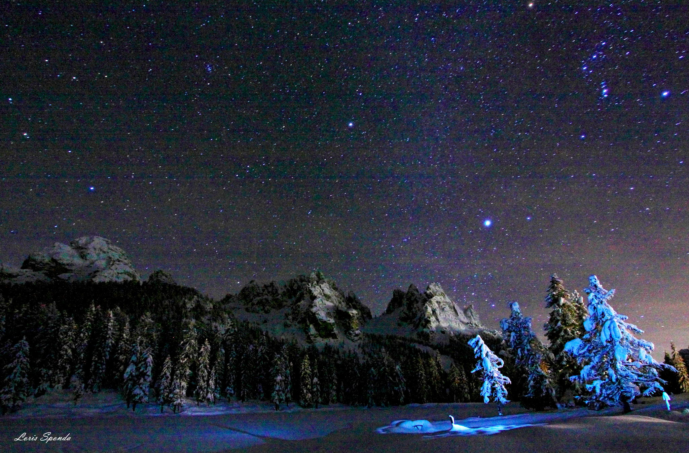
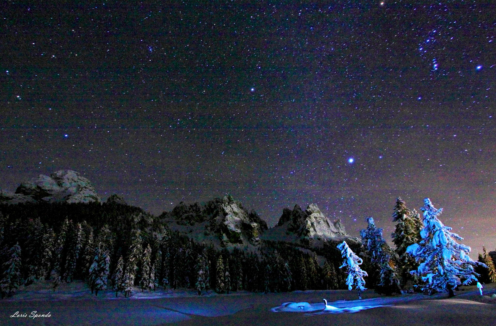

Звёзды
Звезда - массивное самосветящееся небесное тело, состоящее из газа или плазмы, в котором происходят, происходили или будут происходить термоядерные реакции. Ближайшей к Земле звездой является Солнце, другие звёзды на ночном небе выглядят как точки различной яркости, сохраняющие своё взаимное расположение. Звёзды различаются структурой и химическим составом, а такие параметры, как радиус, масса и светимость, у разных звёзд могут отличаться на порядки. Самая распространённая схема классификации звёзд — по спектральным классам — основывается на их температуре и светимости. Кроме того, среди звёзд выделяют переменные звёзды, которые меняют свой видимый блеск по различным причинам, с собственной системой классификации. Звёзды часто образуют гравитационно-связанные системы: двойные или кратные системы, звёздные скопления и галактики. Со временем звёзды меняют свои характеристики, так как в их недрах проходит термоядерный синтез, в результате которого меняется химический состав и масса — это явление называется эволюцией звёзд, и в зависимости от начальной массы звезды она может проходить совершенно по-разному. Вид звёздного неба привлекал людей с древности, с видом созвездий или отдельных светил на нём были связаны мифы и легенды разных народов, до сих пор он находит отражение в культуре. Ещё со времён первых цивилизаций астрономы составляли каталоги звёздного неба, а в XXI веке существует множество современных каталогов, содержащих различную информацию для сотен миллионов звёзд. Ближайшей к Земле звездой является Солнце — типичный представитель спектрального класса G. Звёзды образуются из газово-пылевой среды (главным образом из водорода и гелия) в результате гравитационного сжатия. Температура вещества в недрах звёзд измеряется миллионами кельвинов, а на их поверхности — тысячами кельвинов. Энергия подавляющего большинства звёзд выделяется в результате термоядерных реакций превращения водорода в гелий, происходящих при высоких температурах во внутренних областях. Звёзды часто называют главными телами Вселенной, поскольку в них заключена основная масса светящегося вещества в природе. Примечательно и то, что звёзды имеют отрицательную теплоёмкость.
 Ближайшей к Солнцу звездой является Проксима Центавра. Она расположена в 4,2 светового года (4,2 св. лет = 39 Пм = 39 триллионов км = 3,9·1013 км) от центра Солнечной системы.

Ближайшей к Солнцу звездой является Проксима Центавра. Она расположена в 4,2 светового года (4,2 св. лет = 39 Пм = 39 триллионов км = 3,9·1013 км) от центра Солнечной системы.

Интересные факты о звёздах
В наблюдаемой Вселенной двойных звёзд больше, чем одиночных. Есть и тройные. Самая «многочисленная» известная звёздная система насчитывает шесть звёзд. Плотность нейтронной звезды сопоставима с плотностью атомного ядра. Радиус нейтронных звёзд редко превышает 50 километров, а обычно составляет не более 15-20 километров, однако, их масса в таком случае сопоставима с массой Солнца. Пульсары — особый тип нейтронных звёзд, вращающийся вокруг своей оси со скоростью до пятисот-семисот оборотов в секунду. Самые холодные звёзды — так называемые коричневые карлики. Если бы планета Юпитер (см. интересные факты о Юпитере) была массивнее, она вполне могла бы стать такой звездой. Чем звезда больше, тем меньше срок её жизни. Самая горячая из известных звёзд — Пистолетная звезда. Она настолько горяча, что только её чудовищная гравитация позволяет ей сохранять форму. Пистолетная звезда испускает солнечный ветер в десять миллиардов раз мощнее того, что исходит от Солнца. Наибольшее число звёзд в наблюдаемой Вселенной — красные карлики. Красные карлики — звёзды-долгожители, срок их жизни может составлять до десяти триллионов лет. Самые холодные звёзды — красные, самые горячие — голубые. Самая большая из известных звёзд — UY Щита, она в 1708 раз больше Солнца. Если бы Меркурий (см. интересные факты о Меркурии) обращался вокруг более горячей звезды, он вполне мог бы испариться. Звезда Эта Киля — самая тяжёлая из известных звёзд, её масса составляет около 150 солнечных, и она излучает в четыре миллиона раз больше энергии, чем Солнце. Ближайшая к нам звезда — Проксима Центавра, до неё 4,2 световых года. Белый карлик — финальная стадия жизни небольших звёзд вроде нашего Солнца. Чёрная дыра — финальная стадия жизни звёзд намного более массивных. Солнце делает оборот вокруг центра Галактики примерно за двести миллионов лет.